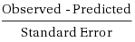
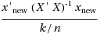

CADStat: Statistical Tools for Causal Analysis
Regression Prediction
Introduction
The regression prediction tool provides a way to model natural variations in an environmental parameter (e.g., stream temperature) in reference (i.e., least-disturbed) sites. Then, one can use the reference site model to determine whether observations of that same parameter in test sites are within the range of variation defined by the reference sites.
The linear regression tool has more options available for diagnosing and assessing the fit of a regression model on the quality data. The regression prediction tool assumes that such diagnostics have been performed to define a regression model, and the goal is now to apply the model to new data.
Tool Use
Select Analysis Tools -> Regression Prediction from the menus. A dialog box will open. Select the data set of interest from the pull-down menu, or browse for a tab-delimited text file. The Data Subsetting tab can be used to select a subset of the data file by choosing a variable from the pull down menu and then selecting the levels of that variable to include. You can hold down the <CTRL> key to add several levels.
Select Dependent variable and Independent variables as in the linear regression tool.
By default, an intercept is included in the model. The intercept can be excluded by selecting Remove Intercept under the Analysis Options, in which case at least one independent variable must have been selected.
Select a Reference Variable — a variable that contains (character) values which can be used to identify which rows correspond to reference data. Once the Reference Variable is selected, select the levels of that variable that correspond to reference data. You can hold down the <CTRL> key to select multiple levels that indicate reference.
Choose a Significance Level for identification of anomalous data points in the new data. Note that the significance level corresponds to a level for a single prediction, not a family-wise significance level; no correction is performed for multiple comparisons when multiple predictions are being made. Keep in mind that some new data is expected to be flagged as significant (on average, about the number of predictions times the significance level should appear significant, depending on correlation).
The ID Variable allows for a label variable to be specified, so that points that differ significantly from reference can be identified on the plot. If no ID Variable is selected, then the row number will be used instead.
The output of the regression prediction tool is a table for the test (non-reference) data, including the observed and predicted values, the standard error associated with the prediction, a p-value for the prediction, an indication of whether the sample differs significantly from reference, an indication of whether the independent variables for the new data are in range of the model fit, and finally an indication of whether or not the normal approximation used to calculate the p-value is appropriate [for poisson and binomial regression only]. Note: for binomial data, the observed value is converted from a count to a proportion (dependent variable divided by sample size). A plot of observed versus predicted values is also produced, to help assess the model fit and identify anomalous data points.
Example
For this example, select Analysis Tools -> Regression Prediction.
Select mergedData as the active dataset (see help page for Loading and merging data for information on loading CADStat example data).
![Screenshot of the Regression Prediction dialog page. mergedData.txt, a data set generated in the data loading and merging help page, has been chosen as the Active dataset. Under the Varibles tab, the dependent variable has been set to 'temp.avg', whereas 'lat', 'area, and 'elev.ut' have been selected as independent variables. Under Reference Selection, the Reference Variable has been set to 'REF', and in the Reference Data Values box, 'REF' has been selected. The Variable for Labels under ID Variable has been set to 'STRM.ID'. Significance Level, under Analysis Options, has been set to '0.05'.](../img/glm.pred.JGR-img2.png)
Select the normal distribution for standard linear regression, then select temp.avg as the dependent variable, and both lat (latitude), area (log catchment area), and elev.ut (elevation) for the independent variables. [Reminder: holding down the <CTRL> key while clicking allows you to select multiple independent variables. Make sure that both appear in the formula at the bottom left of the screen.] Choose REF as the reference variable, then select“Ref” as the level that indicates a reference data point. Finally, select STRM.ID as the ID Variable.
The output table gives several pieces of information for each new (non-reference) data point. The p-value column gives an estimate of the probability that the observation at the test site was drawn from the same population as the reference sites. A low p-value suggests that the test site conditions are likely different from reference expectations. The final column, labeled“In Range?”, gives an indication of whether one should expect the model to perform well for that data point, given the values of the independent variables.
The plot helps summarize the output table. The black dots give the predicted and observed values for the reference data. The new data is then indicated by other colors and symbols, depending on whether or not the data point was a significant deviation from the model, as well as whether or not the model was expected to predict the point well. For plotting purposes, any data point considered out of range or borderline is denoted as out of range of the model. In this example, four streams had observed temperature significantly higher than predicted by the reference model. That is, temperature was higher than expected if these streams were in reference condition.
Technical Details
-
Statistical significance is based on a t-statistic when standard (normal) linear regression is used, or on an approximate z-statistic when Poisson or binomial (logistic) regression is used. The statistic is of the form:

The standard error combines the uncertainty associated with the regression fit and the inherent uncertainty in a new data point. These two variances are added to produce the standard error, which provides an exact standard error for standard linear regression with degrees of freedom equal to the number of data points in the reference dataset minus the number of regression coefficients.
-
For Poisson and binomial regression, the combined standard error is only an approximation for the standard error. The p-value calculated, based on the z-statistic in this case is generally considered valid only for certain values of the predicted mean, that allow for sufficient variability in the result for the discrete variables to approximate the continuous, normal random variable. For purposes here, the normal approximation is considered reasonable for the Poisson if the predicted value is higher than 5. For the binomial, the predicted number of successes must be higher than 5 and the predicted number of successes must be lower than the sample size minus 5.
-
It is important to assess whether or not a new data point is “in range” of the independent variables of the reference data. If the independent variables are outside the range of the reference data, then the predicted values from the model are extrapolations, meaning that the linearity assumptions of the regression model have no basis in data. The predictions may still be viable, but they should be treated with caution.
For purposes of this tool, the statistic used for assessing whether a data point is “in range” is:

where X is the matrix of independent variables for the reference data, xnew is the vector of independent variables for the new data point, ' represents matrix transpose, k is the number of coefficients in the regression model, and n is the number of data points in the reference dataset. (See e.g. John O. Rawlings' Applied Regression Analysis for a discussion of this statistic.) The data point is considered “borderline” if this statistic is greater than 2, and “out of range” if this statistic is greater than 5.